Is 2024 the Breakout Year for Humanoid Robots? Looking at the Challenges and Why the Timing May Be Right
Just one year ago, when many of us registered for ChatGPT simply to try something new and sent our first “Hello” to that six-petaled logo, it would have been hard to imagine that only a year later we would already be talking seriously about the humanoid robots long depicted in science fiction.
After the frenzy around chatbots and AI agents, the arrival of Sora as a so-called “world simulator” has pushed both researchers and investors toward the physical embodiment of AI: robots, and especially humanoid robots.
Human evolution gave us a body first and intelligence emerged gradually through natural selection. Since 2023, the development of large models seems to have reversed that sequence: the “intelligent brain” arrived first and is now searching for a body. In the second half of 2023, that body was largely “tools”; in 2024, attention is turning toward an intelligent physical body.
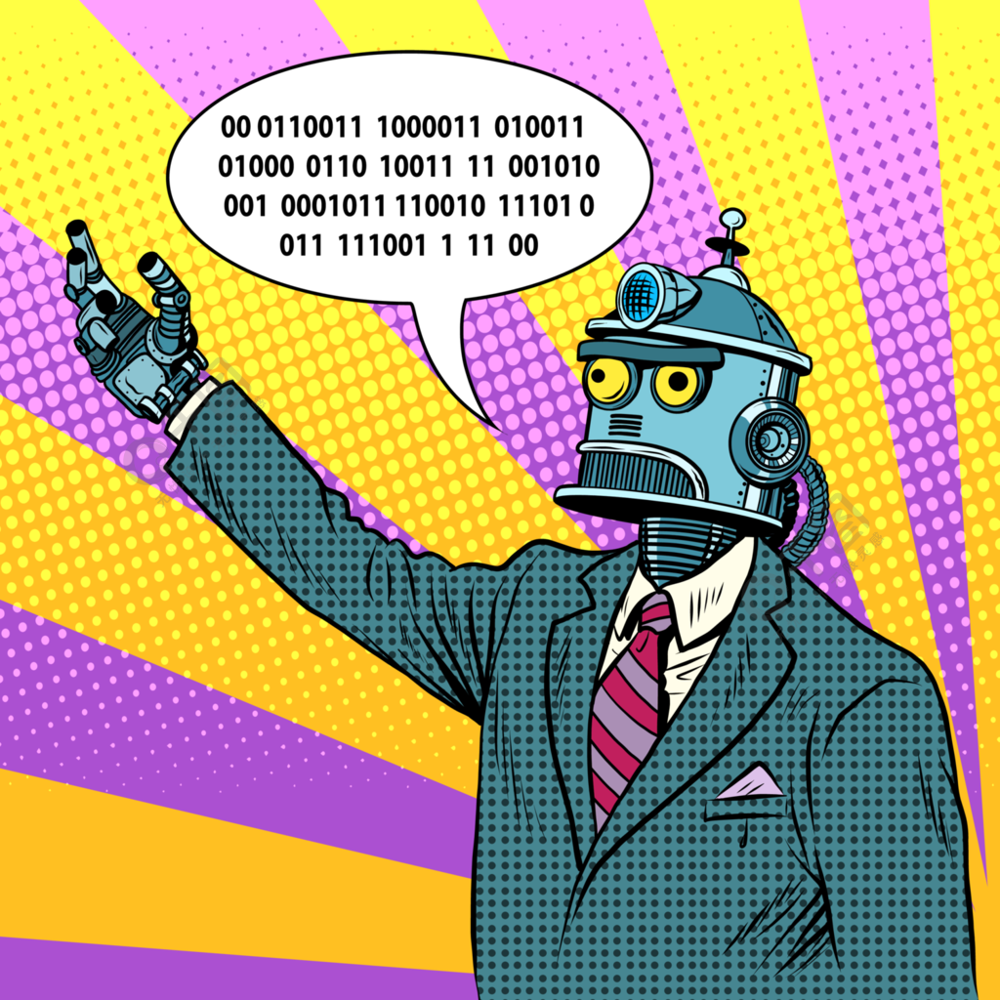
Leaving aside whether phrases such as “the first year of X” are overused, one thing is worth recognizing. Humanoid robots would be fundamentally different from chatbots or software agents. If human-shaped machines become widely deployed, the impact would not be limited to an “AI industry” or the existing robotics sector. A human-like machine with direct productive capacity would be not merely an enabling technology but potentially a substitutive technology, with consequences for politics, economics, and culture.
So, could 2024 really be the beginning of the humanoid-robot era? To answer that, we first need to understand why humanoid robots are so difficult.
The Crown Jewel: Why Are Humanoid Robots So Hard?
Ask someone with no AI background what artificial intelligence means, and a natural answer might be: making computers behave like humans. Yet after roughly six decades of AI research—from rule-based systems, to machine learning, to today's large-model-based agents—can we really say that computers now behave like people?
Clearly, not yet.
AI has made extraordinary progress: from failing at simple games to AlphaGo dominating Go; from recognizing handwritten digits in 28×28 grayscale images to computer vision systems deployed everywhere in daily life; and then to ChatGPT and GPT-4, which some have argued can pass versions of the Turing test.
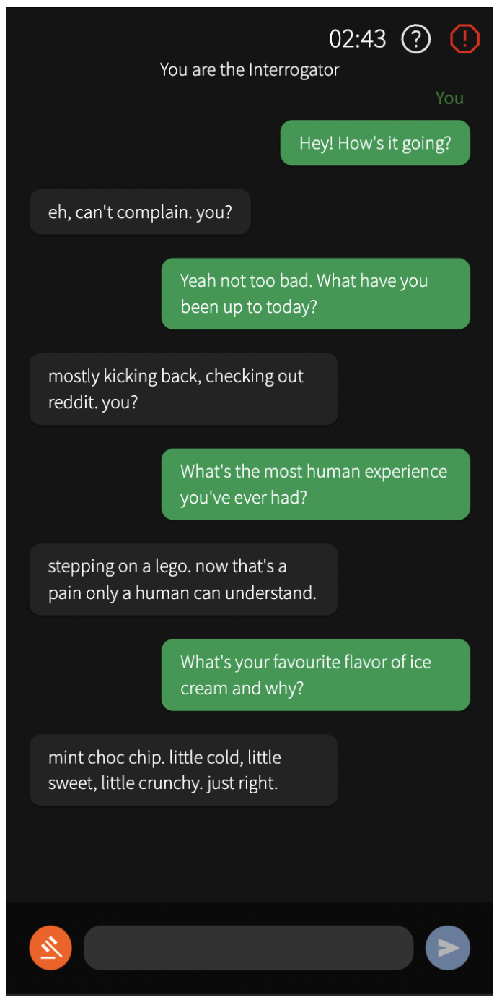
But no matter how impressive these algorithms are, they still mainly perform computation inside a virtual world constructed by computers. A black box is useful only when someone connects it to the outside world. Most AI systems still lack the ability to autonomously and directly act on the physical world around us.
This lack of agency creates a major gap between today's AI and the idea of “acting like a human.” How can intelligence escape the purely digital world and become physically present? Roboticist Rodney Brooks summarized one answer with a famous idea: “Intelligence requires a body.”
Geminoid F, a humanoid robot developed by Japanese roboticist Hiroshi Ishiguro.
As early as the 1980s, Brooks emphasized embodiment in robotics. The word itself combines the idea of putting something “into a body.” For intelligence, a physical body is both a capability and a constraint. It enables an intelligent system to interact with and alter the physical world, while its physical boundaries prevent it from being nearly omnipresent in the way a cloud-based model can be.
The idea of placing robots in the real world and letting them acquire knowledge through perception, action, and trial and error may sound straightforward. Actually doing this as well as humans do is enormously difficult. The human body contains an information-processing system refined over an extremely long evolutionary history. When we climb stairs, for example, the nervous system senses forces at the feet, estimates balance, and rapidly adjusts muscles throughout the body—mostly outside conscious awareness.
For a robot, transferring this apparently effortless behavior into the physical world is extremely complex. There may be only a narrow set of ways to execute a task successfully, but countless ways to fail. Even if engineers carefully imitate human anatomy and explicitly catalogue possible actions, a top-down reconstruction struggles to reproduce the “instincts” that biology acquired through evolution.
In other words, one could say that our ancestors encoded a kind of world model into the body itself. Even a baby, long before acquiring language and explicit knowledge, already possesses a body capable of performing sophisticated interactions with the real world. On top of those embodied experiences, humans gradually build the higher-level structures we usually call intelligence: language, knowledge, culture, and meaning.
The fundamental difficulty of humanoid or embodied robots is therefore to construct a body refined enough to reproduce some of the world model that humans inherit biologically.
And that road has been long and difficult.
A Brief History of Humanoid Robots: How Far Have We Come?
The world's first humanoid robot is often traced to work at Waseda University in Japan. In 1969, Professor Ichiro Kato's team developed the WL-5 bipedal walking machine, later associated with the WABOT project. It used hydraulic actuation and could walk on two legs, but very slowly: a step of roughly 15 centimeters could take around 40 seconds.
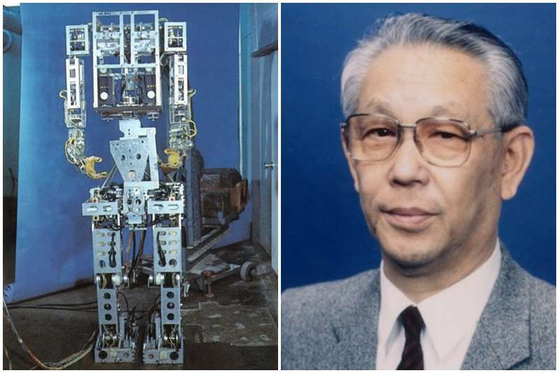
Honda began developing ASIMO in 1986 and released its first generation in 2000. Compared with the early WABOT machines, the 1.2-meter-tall, astronaut-like ASIMO could walk upright smoothly at about 1.6 km/h.
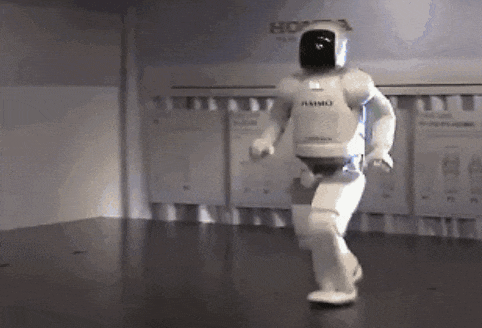
In 2003, Japan's AIST introduced HRP-1S, which could operate control levers inside a construction-machine cab. In the same year, Toyota demonstrated its Partner Robots performing tasks such as playing a trumpet and violin.
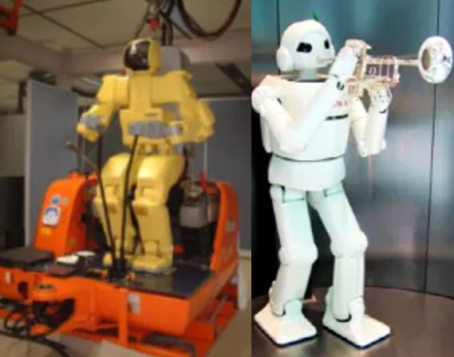
By 2005, Honda had upgraded ASIMO from walking to running, reaching about 6 km/h.
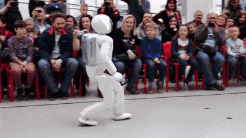
In 2013, Boston Dynamics introduced the first Atlas. At roughly 1.8 meters tall and 150 kilograms, Atlas demonstrated much stronger dynamic stability than ASIMO and could maintain balance even under external disturbances.
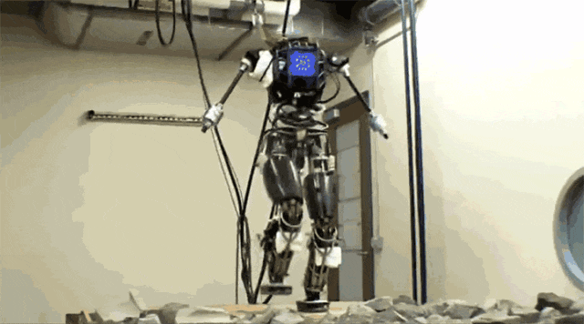
Meanwhile, from 2007 to 2016, ASIMO successively demonstrated backward walking, single-leg hopping, running at 9 km/h, kicking a soccer ball, using sign language, pouring drinks, and other tasks requiring greater coordination and precision.
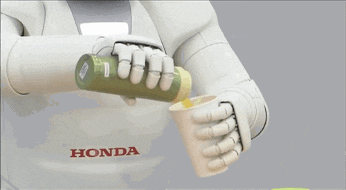
After 2017, Atlas also became dramatically more athletic, progressing from object handling to jumping, backflips, handstands, and complex gymnastics-like movements.
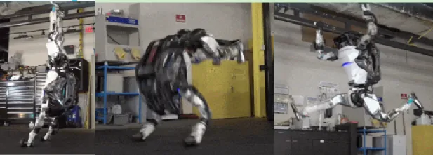
In 2021, Elon Musk used Tesla AI Day to propose the commercialization of a humanoid robot and said an initial version would appear the following year.
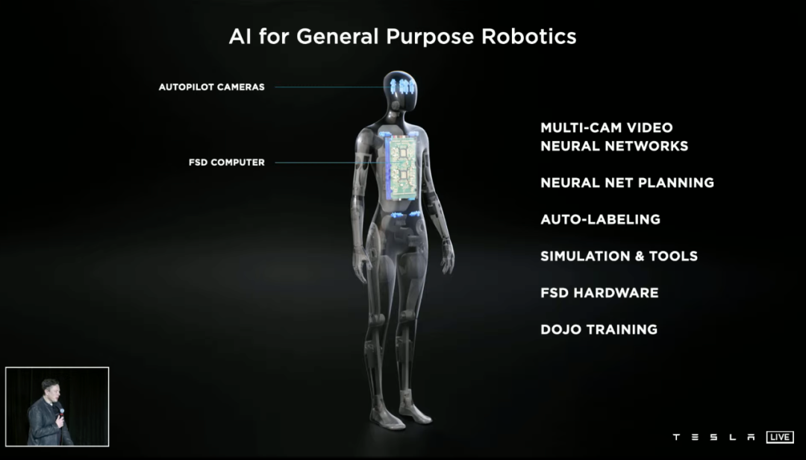
Tesla followed through in 2022 with an early version of Optimus, demonstrating simple tasks such as carrying objects and watering plants.
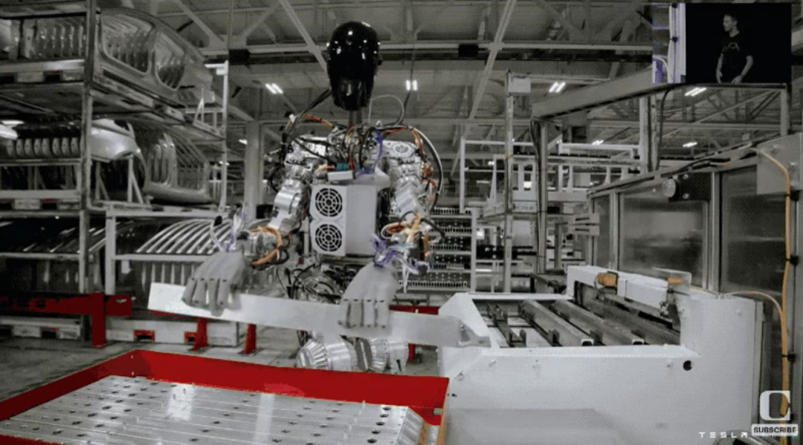
By 2023, Boston Dynamics was showing Atlas walking smoothly, cooperating with humans, and completing assigned physical tasks.
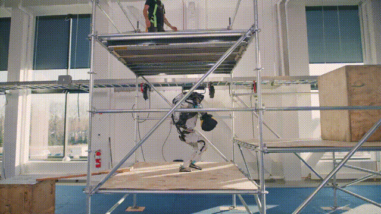
At the end of 2023, the second-generation Tesla Optimus demonstrated joint motion and flexibility impressive enough to make viewers ask whether they were watching real video rather than CGI.
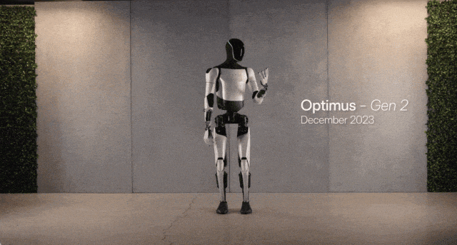
Yet despite the remarkable advances in flexibility and movement, Musk himself noted when launching the first Optimus that existing humanoid robots “lack a brain.” After the second generation appeared, he also acknowledged that Optimus was not yet autonomously carrying out tasks such as folding clothes.
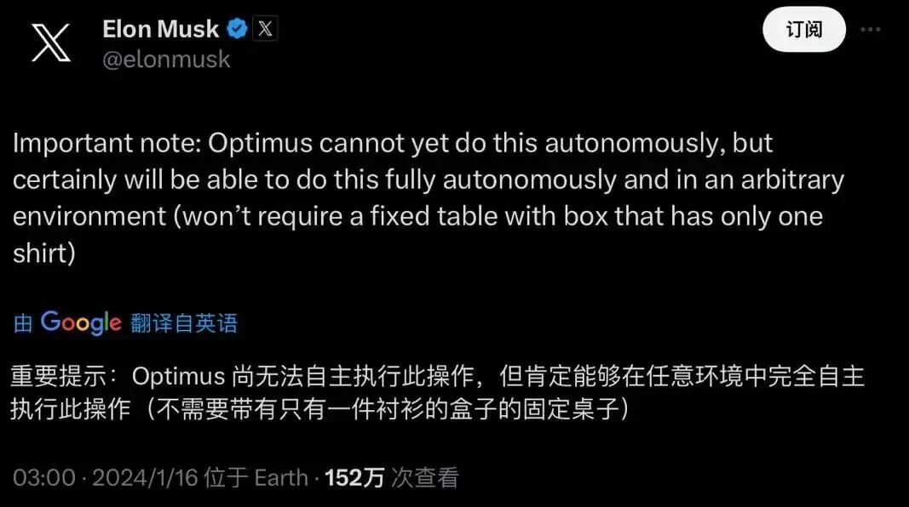
From 1969 to 2023, humanoid robots acquired much better bodies: stronger hardware, more capable “muscles,” improved control, and more sophisticated sensing. But they still mostly imitate human actions rather than truly act as humans do. Their understanding of the world remains largely a rule-based environment constructed by engineers, rather than a rich world model built through autonomous exploration and self-modeling.
From “What Is It?” to “What Can It Do?”: Are Humanoid Robots Entering the Present Tense?
In 2024, however, this may begin to change.
Many media outlets have called 2024 “the year of robotics.” Much of that enthusiasm comes not from a single technical breakthrough but from the capital market. In December 2023, UBTECH—often described as a leading publicly listed humanoid-robot company—went public. In February 2024, Figure AI raised roughly $675 million from investors including Amazon, NVIDIA, Microsoft, and OpenAI. In China, industry statistics counted 24 robotics financing events between January 1 and March 20, spanning humanoid, surgical, industrial, and other robots.
Capital often moves before mass deployment. Investors have become more optimistic partly because Tesla's rapid iteration suggests that large-scale commercialization of humanoid robots—whether for businesses or consumers—may become possible. But another important factor is the trajectory of large models. After moving from chatbots to agents in 2023, the industry began looking for a body that could carry the agent into the physical world.
At the moment, the magic ingredient people hope will move humanoid robots from merely “imitating humans” toward behaving more like them is still the large language model.
At NVIDIA GTC on March 19, alongside the GB200 superchip, NVIDIA introduced Project GR00T (Generalist Robot 00 Technology), a foundation model intended for general-purpose humanoid robotics. GR00T is designed to learn from broad multimodal experience so that robots can learn actions and model the real world. Jensen Huang described GR00T-powered robots as systems that can understand natural language and learn movements by observing humans.
NVIDIA also introduced the Jetson Thor computing platform as a potential “robot brain,” emphasizing high performance and low power consumption. Combined with Project GR00T, it sketches an initial architecture for the intelligent core of future humanoid robots.
But this is still not enough.
Robotics has a famous observation known as Moravec's paradox: it is relatively easy to make a machine perform at a high level in chess, but extremely difficult to give it the perception and motor skills of a young child.
Compute plus large models does not guarantee that humanoid robots will perfectly model the physical world. Even Sora, which OpenAI has described in world-simulator terms, does not prove that its generated worlds contain a deep understanding of physical reality rather than an extraordinarily convincing approximation. Nor do we yet know whether large models can reliably turn autoregressively generated “correct answers” into correct physical decisions, much less into the kind of fast, almost reflexive capabilities humans acquire through embodiment.
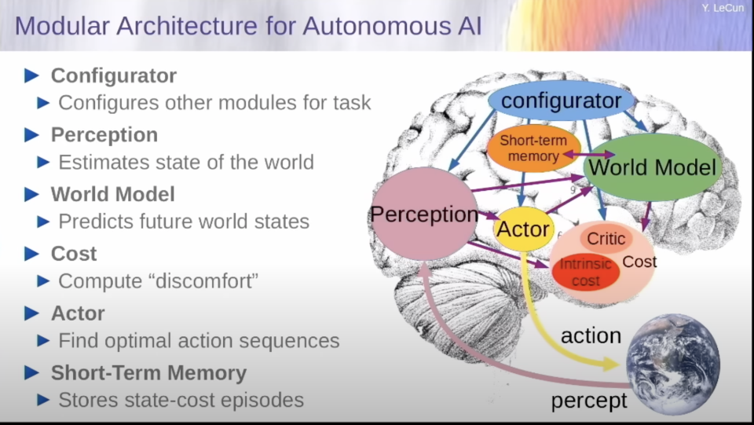
But perhaps we should change the question. Instead of asking “What is artificial intelligence?”, ask “What can artificial intelligence do for us?” ChatGPT is not human, yet it can already perform many tasks once reserved for people. In the same way, throughout 2024 we can reasonably expect the combination of compute + large models + humanoid robots to begin entering human-centered environments. Their generality and naturally human-compatible body shape may let them integrate into society in ways very different from fixed industrial robot arms.
We can already see pieces of that possibility: NVIDIA's GR00T project; Tesla's experience combining vision-based perception with a mature electric-vehicle hardware supply chain; Figure AI demonstrations in which robots learn and correct errors while making coffee; and Stanford's Mobile ALOHA platform, built at a cost of roughly $32,000.
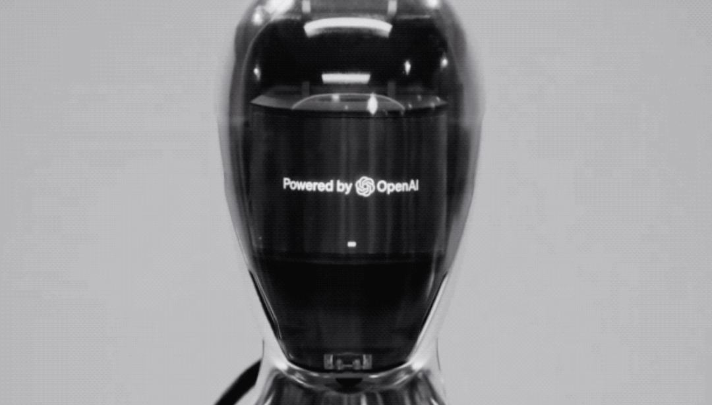
So the question “Will 2024 be the first year of humanoid robots?” is really two questions. Will 2024 inaugurate a mature era of world models and embodied intelligence, producing robots that truly function like humans? Probably not. But will humanoid robots make important breakthroughs and begin moving into real life? That is no longer a future-tense question—it is already happening.